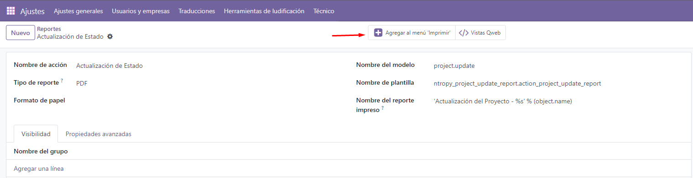
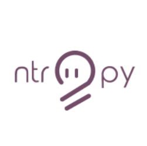

Changelog:
Vinculación del Reporte (fix temporal)
Se necesita vincular primero el reporte con el modulo de proyectos, requiere entrar a menu de reportes en Odoo y buscar el nombre de 'report'

Ejemplo de Uso
En el icono de engrane aparecerá una nueva opción con el icono de impresora que se llama 'Actualización de Estado', esto nos generará un PDF con el resumen de la actualización.

